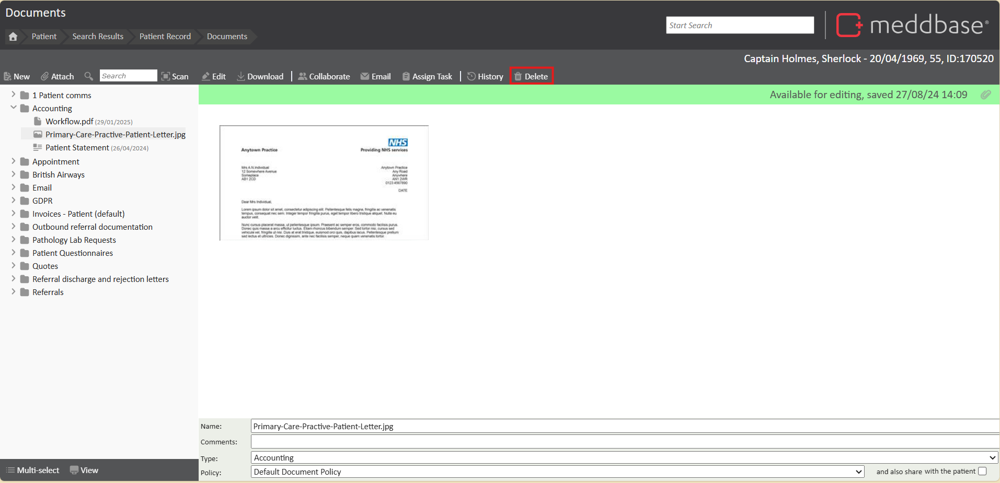
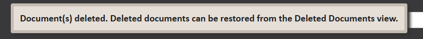
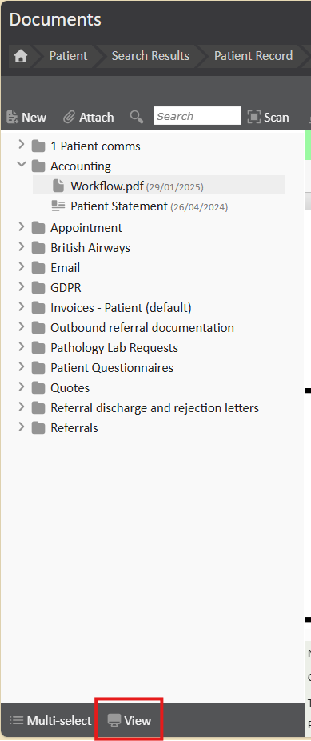
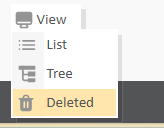
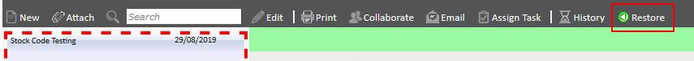
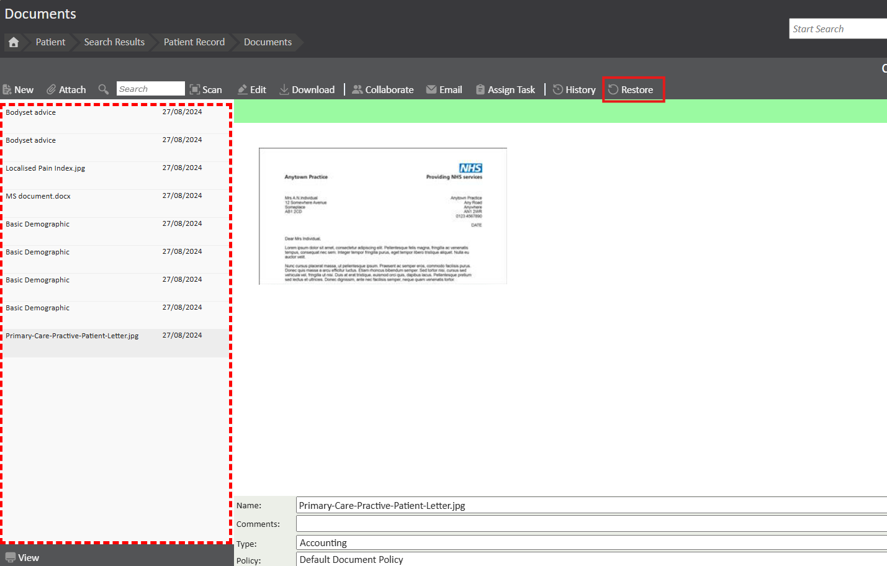
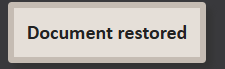

Meddbase provides a "Deleted" view where deleted documents are temporarily stored, allowing users to review and restore them if necessary. This feature ensures that no document is permanently erased from the system without the option to recover it.
Please note, the ability to delete and recover documents is governed by permissions within the Document Certificate.
This article will explain how to delete and recover documents
To delete a document, find and select the desired document. On the top tool bar, click Delete. This will mark the document as deleted and you will see a pop up appear notifying you how to undo the action if required.


To restore a deleted document, you will need to change the current view of the documents page. To do this, click View on the bottom left of the documents page. Then click Deleted.


You will see, the document list will be highlighted in red. Even after deleting documents you may preview them here; if these documents were deleted accidentally then they may also be restored.

To restore a document from the deleted view, simply select the document you wish to restore followed by clicking the ‘Restore’ button above the preview window. This will restore the document back to its previous location.


To view the restored documents, click View > Tree to return to the active documents page.